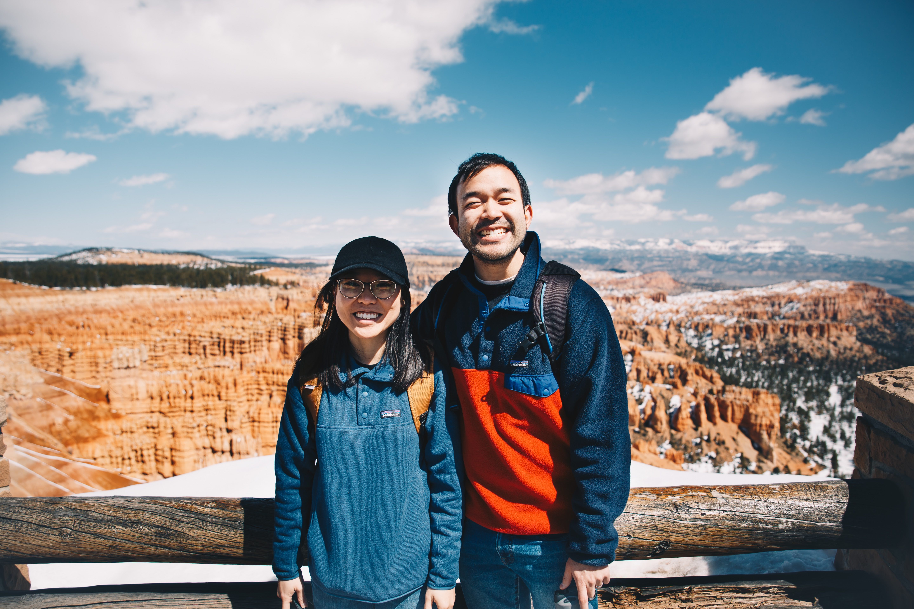

Rachel Oh
QA Engineer and (sometimes) web developer with a fresh humanistic perspective.
Projects
Ingredient Me: a Recipe App
An app that'll find you the recipe that fits your dietary needs (and also use up whatever is in your fridge). Users can search for recipes by including and/or excluding specific ingredients.

Skills and Technologies
Front-End
JavaScript, jQuery, HTML/CSS
Currently Learning
React, Node
About me
I am a full-time QA Engineer, testing code and ensuring that quality software gets released. I'm involved in both manual and automated testing of software used by biopharma companies around the world. I'm involved in cross-browser testing, ensuring that the browser and device apps work across different kinds of clients.
It's really fun to learn to manually and through automation test software and working with developers, UX/UI designers, and product managers to release quality features and products that customers can trust in.
With my diverse background in sociology, communications, facilitating meetings and working with multiple teams, I offer flexibility and the ability to be able to learn quickly, adapt to needs and different teams, and a fresh perspective to meet whatever challenges come my way.
When I'm not coding or testing, I can be seen curling up with a good book, drinking some good coffee at a local cafe, or exploring the great outdoors with my husband, Daniel (picture above).